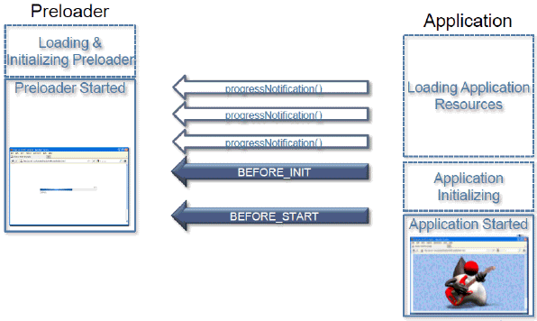

This section explains the preloaders that are used for JavaFX applications, and describes how to implement a custom preloader. Custom preloaders are not available for Java applications, however, the default preloader can be customized.
During the second phase of startup, a preloader application runs, either the default application in the JavaFX Runtime or a custom application that you supply. See Section 4.2, "Application Startup Process, Experience, and Customization" for information about how a preloader fits into the startup flow.
A custom preloader application is optional and can be used to tune the application loading and startup experience. For example, use of a preloader can help to reduce perceived application startup time by showing some content to the user earlier, such as a progress indicator or login prompt.
A preloader application can also be used to present custom messaging to the user. For example, you can explain what is currently happening and what the user will be asked to do next, such as grant permissions to the application, or you could create a preloader to present custom error messages.
Not every application needs a custom preloader. For example, if your application is small and does not have special requirements such as permissions, then it probably starts quickly and the default preloader is sufficient. Even for larger applications, the default preloader included with the JavaFX Runtime can be a good choice, because it is loaded from the client machine rather than the network.
This section contains the following topics:
See Section 4.2, "Application Startup Process, Experience, and Customization" for information about how to customize the default preloader.
For information on customizing the preloader for Java applications, see Chapter 14, "Customizing the Loading Experience."
A custom preloader is a specialized JavaFX application that extends the javafx.application.Preloader class. Because the Preloader class is an extension of javafx.application.Application, a custom preloader has the same life cycle and can use all of the features of the JavaFX Runtime.
The preloader startup sequence is shown in relation to the application startup in Figure 13-1. The preloader application is started before the main application and gets notification of the progress of the loading application resources, application initialization, and startup, as well as of errors.
Figure 13-1 Preloader Startup Related to Application Startup
Example 13-1 shows a simple preloader that uses the ProgressBar control to show the loading progress.
Example 13-1 Simple Preloader Using the ProgressBar Control
public class FirstPreloader extends Preloader {
ProgressBar bar;
Stage stage;
private Scene createPreloaderScene() {
bar = new ProgressBar();
BorderPane p = new BorderPane();
p.setCenter(bar);
return new Scene(p, 300, 150);
}
public void start(Stage stage) throws Exception {
this.stage = stage;
stage.setScene(createPreloaderScene());
stage.show();
}
@Override
public void handleProgressNotification(ProgressNotification pn) {
bar.setProgress(pn.getProgress());
}
@Override
public void handleStateChangeNotification(StateChangeNotification evt) {
if (evt.getType() == StateChangeNotification.Type.BEFORE_START) {
stage.hide();
}
}
}
As a regular JavaFX application, the FirstPreloader class uses the start() method to create a scene to display the loading progress. Updates on progress are delivered to the preloader using the handleProgressNotification() method, and the FirstPreloader implementation uses them to update the UI.
The preloader and main application have different Stage objects, and the preloader must take care of showing and hiding its own stage when needed. In Example 13-1, the preloader stage is hidden after notification is received that the start() method of the main application is about to be called.
The implementation of the FirstPreloader class illustrates the main concept and works in many scenarios, but it does not provide the best user experience for all use cases. See Section 13.3, "Preloader Code Examples" for examples of how to improve the FirstPreloader class.
Packaging applications with preloaders has some special requirements.
First, in most cases, the code for the preloader must be packaged into one or more JAR files that are separate from the rest of application. This enables faster loading when the application is deployed on the web. Using a single JAR file for both application and preloader code can be a good choice for some specialized cases, for example if the application is run in standalone mode only. In NetBeans IDE, the JAR files are packaged separately by creating two projects: one for the main application and a special JavaFX preloader project for the preloader. See Section 13.2.1, "Packaging a Preloader Application in NetBeans IDE."
Second, application deployment descriptors must include information about which class belongs to the preloader and where the preloader code is. The way to specify it depends on what tools you use for packaging. For more information about tools, see Section 5.3.1, "Java Packaging Tools."
All of the packaging tools produce a deployment descriptor that includes the preloader, as in Example 13-2. In this example, the main application is called AnimatedCircles and the preloader application is called FirstPreloader.
Example 13-2 Sample Deployment Descriptor for an Application with a Preloader
<?xml version="1.0" encoding="utf-8"?>
<jnlp spec="1.0" xmlns:jfx="http://javafx.com" href="AnimatedCircles.jnlp">
<information>
<title>AnimatedCircles</title>
<vendor>Oracle</vendor>
<description>Animated Circles</description>
<offline-allowed/>
</information>
<resources>
<j2se version="1.7_06+" href="http://java.sun.com/products/autodl/j2se"/>
<jar href="lib/FirstPreloader.jar" size="2801" download="progress" />
<jar href="AnimatedCircles.jar" size="13729" download="always" />
</resources>
<applet-desc width="800" height="600"
main-class="com.javafx.main.NoJavaFXFallback" name="AnimatedCircles" />
<jfx:javafx-desc width="800" height="600"
main-class="animatedcircles.AnimatedCircles" name="AnimatedCircles"
preloader-class="firstpreloader.FirstPreloader"/>
<update check="background"/>
</jnlp>
The manifest must also contain the class path to the preloader, shown in Example 13-3.
Example 13-3 Sample Manifest for an Application with a Preloader
Manifest-Version: 1.0 JavaFX-Version: 2.2 implementation-vendor: nhildebr implementation-title: AnimatedCircles implementation-version: 1.0 JavaFX-Preloader-Class: firstpreloader.FirstPreloader JavaFX-Application-Class: animatedcircles.AnimatedCircles JavaFX-Class-Path: lib/FirstPreloader.jar Created-By: JavaFX Packager Main-Class: com/javafx/main/Main Permissions: sandbox
If you are using NetBeans IDE, in the main application you can specify either another NetBeans project that contains the main preloader class, or a JAR file in which the preloader is packaged.
The following procedures show two ways to package a preloader in NetBeans IDE, depending on your project configuration. You can either create a new NetBeans project and choose a preloader option, or you can add a preloader to an existing NetBeans project. Both procedures use the preloader class from Example 13-1.
To create a new application with a preloader in NetBeans IDE:
On the File menu, choose New Project.
Select the JavaFX category and JavaFX Application as the project type. Click Next.
Enter FirstApp as a project name and choose Create Custom Preloader. Click Finish.
Netbeans IDE creates two new projects for you: a FirstApp-Preloader project with basic implementation of a custom preloader, and FirstApp project with a sample JavaFX Application using your custom preloader.
Open the SimplePreloader class in Source Packages in the FirstApp-Preloader project.
Replace the implementation of the SimplePreloader class with the implementation of the FirstPreloader class, or any other sample from this page.
Be sure to fix imports if needed by going to the Source menu and choosing Fix Imports.
Select the FirstApp project and run Clean and Build to build both the sample application and the preloader.
The artifacts are placed in the dist folder in the FirstApp project.
Test the artifacts by running them in Netbeans.
|
Tip: You can launch your application as standalone or in a browser by choosing a Run category in Project Properties, or you can directly open the build artifacts. |
Note that for standalone launch, the preloader might be not visible if it displays loading progress only, because there is nothing to load. Even when testing web launch from a local hard drive, the preloader might show up for only a very short time.
To add a preloader to an existing NetBeans project:
Create a separate NetBeans project of type JavaFX Preloader for the preloader class. In the example, the project name is FirstPreloader, which contains the firstpreloader package and the code for the FirstPreloader class.
In the Project Properties for the main application, click the Run category.
Select the check box Use Preloader, Click Browse, then choose the NetBeans project for the preloader. The Preloader Class field is populated by default, as shown in Figure 13-2.
|
Note: As an alternative to selecting a NetBeans project for the preloader, when you click Browse you have the option of selecting a preloader JAR file. |
Click OK to close the Project Properties dialog box.
Right-click the main application, and choose Clean and Build.
The main application files are created for deployment in the dist directory, and the preloader JAR file is placed in a lib subdirectory. All of the necessary JNLP and manifest entries are handled by the IDE.
Ant users must specify information about the preloader class and JAR files in both the <fx:jar> and <fx:deploy> tasks. Setting the proper parameters in the <fx:jar> task ensures that the preloader is registered for standalone applications. Setting the proper parameters in the <fx:deploy> task creates the configuration for web deployment.
Some settings are required in other parts of the Ant script. The preloader main class is specified as part of the <fx:deploy> element, as shown in Example 13-4.
Example 13-4 Specify the Preloader Class in <fx:application>
<fx:application id="app-desc"
mainClass="sample.AppSample"
preloaderClass="preloaders.SamplePreloader"/>
Preloader resources are marked with the requiredFor="preloader" attribute in the description of application resources, nested under <fx:application>, as shown in Example 13-5.
Example 13-5 Use the requiredFor Attribute of <fx:fileset>
<fx:application ... >
<fx:resources>
<fx:fileset id="preloader-files"
requiredFor="preloader"
dir="dist"
includes="preloader.jar"/>
<fx:fileset dir="dist" includes="myapp.jar"/>
</fx:resources>
</fx:application>
With the help of the refid attribute creating a reference to an id attribute, elements can be reused to reduce code duplication. The preloader settings for the <fx:jar> and <fx:deploy> tasks are shown in Example 13-6.
Example 13-6 Preloader Settings in <fx:jar> and <fx:deploy> Tasks
<fx:jar destfile="dist/application.jar">
<fx:application refid="app-desc"/>
<fx:resources>
<fx:fileset refid="preloader-files"/>
</fx:resources>
<fileset dir="build/classes/" include="**"/>
</fx:jar>
<fx:deploy width="600" height="400"
outdir="app-dist" outfile="SampleApp">
<fx:info title="Sample application"/>
<fx:application refid="app-desc"/>
<fx:resources>
<fx:fileset requiredFor="startup" dir="dist" include="application.jar"/>
<fx:fileset refid="preloader-files"/>
</fx:resources>
</fx:deploy>
See Example 10-3 for another preloader configuration in a full Ant task. In that example, both the preloader and the main application JAR files are signed in the <fx:signjar> task. If the preloader JAR file is unsigned and the main application JAR file is signed, then a multipart deployment descriptor is needed. Packaging is similar to any other JavaFX application using a mix of signed and unsigned code. For more information, see Section 5.7.2, "Application Resources."
Note the following preloader-specific details:
The name of the preloader class is always specified in the main application descriptor, as in Example 13-4.
In most cases, it is a good idea to keep the preloader JAR files in the main application descriptor so they start loading sooner.
The reasoning for the last point is as follows. There are two <fx:deploy> tasks to package this application, which generate two different JNLP files: one for the main application and another extension. The application starts from the link to the main JNLP, so whatever is referenced from the main JNLP file can start loading sooner, and is ready faster.
The following code examples demonstrate various uses of preloaders:
Section 13.3.4, "Using a Preloader to Display the Application Initialization Progress"
Section 13.3.5, "Cooperation of Preloader and Application: A Login Preloader"
Section 13.3.6, "Cooperation of Preloader and Application: Sharing the Stage"
If the application runs standalone or is loaded from the web cache, then the preloader does not get any progress notifications because there is nothing to load, and the application will likely start quickly.
Using the FirstPreloader example as implemented in Example 13-1, users see only the preloader stage briefly with 0 percent progress. Unless the application is embedded in a browser, a window also pops up that is briefly visible. In this case, a better user experience is to show nothing until the first progress notification.
When the application is embedded in a web page, something needs to be shown to avoid having a gray box where the application will appear. One possible approach is to display the HTML splash screen until the preloader has something to display or, if the preloader does not get any events, until the application is ready. Another option is to show a simplified version of the preloader, and add a progress indicator after the first progress notification is received.
Example 13-7 shows how to improve the relevant parts of the FirstPreloader implementation:
Do not show the progress indicator until the first progress notification.
If the preloader stage is not embedded, do not show the progress bar until the first progress notification.
Example 13-7 Example of Tweaking When the Preloader Appears
boolean isEmbedded = false;
public void start(Stage stage) throws Exception {
//embedded stage has preset size
isEmbedded = (stage.getWidth() > 0);
this.stage = stage;
stage.setScene(createPreloaderScene());
}
@Override
public void handleProgressNotification(ProgressNotification pn) {
if (pn.getProgress() != 1 && !stage.isShowing()) {
stage.show();
}
bar.setProgress(pn.getProgress());
}
See Section 13.3.3, "Using JavaScript with a Preloader" for an example of how to postpone hiding the splash screen.
The last state change notification received by the preloader before the application starts is StateChangeNotification.Type.BEFORE_START. After the notification is processed, the application's start() method is called. However, it can take time before the application is ready to display its stage after the start() method is called. If the preloader stage is already hidden, then there could be a period of time when the application shows nothing on the screen. When the application is embedded in a web page, this can result in a hole in the web page effect.
For this and other reasons, hiding the preloader instantly might not be the best visual transition from preloader to application. One approach to improve the visual transition between preloader and application is shown in Example 13-8. If this FirstPreloader example is used for an application embedded in a web page, it will fade out over a period of 1 second instead of hiding instantly.
Example 13-8 Make the Preloader Fade Out
@Override
public void handleStateChangeNotification(StateChangeNotification evt) {
if (evt.getType() == StateChangeNotification.Type.BEFORE_START) {
if (isEmbedded && stage.isShowing()) {
//fade out, hide stage at the end of animation
FadeTransition ft = new FadeTransition(
Duration.millis(1000), stage.getScene().getRoot());
ft.setFromValue(1.0);
ft.setToValue(0.0);
final Stage s = stage;
EventHandler<ActionEvent> eh = new EventHandler<ActionEvent>() {
public void handle(ActionEvent t) {
s.hide();
}
};
ft.setOnFinished(eh);
ft.play();
} else {
stage.hide();
}
}
}
If the preloader and application cooperate, then the transition is even smoother. See Section 13.3.6, "Cooperation of Preloader and Application: Sharing the Stage" for an example of a preloader that fades into the application.
If the application takes time to initialize, then it can be helpful to use a custom notification to initiate the transition from preloader to application when the application is ready. See Section 13.3.4, "Using a Preloader to Display the Application Initialization Progress" for further information.
Because a JavaFX application preloader has access to application features such as parameters and host services, the preloader can use JavaScript to communicate to the web page in which an application is embedded.
In Example 13-9, JavaScript access is used to create a preloader that displays the loading progress in the HTML splash screen and hides the splash screen only when the application is ready. The code uses the following two JavaScript methods, which must be provided by the web page:
hide() to hide the HTML splash screen
progress(p) to update the progress
It is assumed that there is a custom HTML splash screen that is not hidden by default.
Example 13-9 Use JavaScript from the Preloader
import javafx.application.Preloader;
import javafx.stage.Stage;
import netscape.javascript.JSObject;
public class JSPreloader extends Preloader {
public void start(Stage stage) throws Exception {}
public void handleStateChangeNotification(StateChangeNotification evt) {
if (evt.getType() == StateChangeNotification.Type.BEFORE_START) {
JSObject js = getHostServices().getWebContext();
if (js != null) {
try {
js.eval("hide();");
} catch (Throwable e) {
System.err.println("Ouch "+e);
e.printStackTrace();
}
}
}
}
public void handleProgressNotification(ProgressNotification pn) {
JSObject js = getHostServices().getWebContext();
if (js != null) {
try {
js.eval("progress("+ ((int) (100*pn.getProgress()))+");");
} catch (Throwable e) {
e.printStackTrace();
}
}
}
}
Example 13-10 shows a sample web page template that uses the preloader in Example 13-9. When this template page is processed during packaging, #DT.SCRIPT.URL# and #DT.EMBED.CODE.ONLOAD# will be replaced with code to embed the JavaFX application into the web page. For more information about templates, see <fx:template> in the JavaFX Ant reference.
Example 13-10 Web Page Template Containing JavaScript for Preloader
<html>
<head>
<style>
div.label {
position:absolute;
bottom:100px;
left:200px;
font-family: 'tahoma';
font-size:150px;
color:silver;
}
</style>
<SCRIPT src="#DT.SCRIPT.URL#"></SCRIPT>
<script>
//Postpone the moment the splash screen is hidden
// so it can show loading progress
// save reference to hide function and replace it with no op for now
var realHide = dtjava.hideSplash;
dtjava.hideSplash = function(id) {}
//hide splash
function hide() {
realHide('sampleApp');
}
//update progress data
function progress(p) {
var e = document.getElementById("splash");
e.removeChild(e.firstChild);
e.appendChild(document.createTextNode(""+p));
}
//create custom splash to be used
function getSplash(app) {
var l = document.createElement('div');
l.className="label";
l.id="splash";
l.appendChild(document.createTextNode("..."));
return l;
}
</script>
<!-- #DT.EMBED.CODE.ONLOAD# -->
</head>
<body>
<h2>Test page for <b>JS preloader sample</b></h2>
<!-- Application will be inserted here -->
<div id='javafx-app-placeholder'></div>
</body>
</html>
A JavaFX application can pass information about events to a preloader by using custom notifications. For example, the preloader can be used to display the application initialization progress.
Technically, any class implementing the Preloader.PreloaderNotification interface can serve as a custom notification, and the application can send it to the preloader by using the Application.notifyPreloader()method. On the preloader side, the application notification is delivered to the handleApplicationNotification() method.
Example 13-11 is a variation of the FirstPreloader example. It does not hide the preloader after notification of application startup is received. It waits for application-specific notifications, displays the progress notifications, and hides the splash screen after the application sends a state change notification.
Example 13-11 Preloader to Display Progress of Application Initialization and Loading
public class LongAppInitPreloader extends Preloader {
ProgressBar bar;
Stage stage;
boolean noLoadingProgress = true;
private Scene createPreloaderScene() {
bar = new ProgressBar(0);
BorderPane p = new BorderPane();
p.setCenter(bar);
return new Scene(p, 300, 150);
}
public void start(Stage stage) throws Exception {
this.stage = stage;
stage.setScene(createPreloaderScene());
stage.show();
}
@Override
public void handleProgressNotification(ProgressNotification pn) {
//application loading progress is rescaled to be first 50%
//Even if there is nothing to load 0% and 100% events can be
// delivered
if (pn.getProgress() != 1.0 || !noLoadingProgress) {
bar.setProgress(pn.getProgress()/2);
if (pn.getProgress() > 0) {
noLoadingProgress = false;
}
}
}
@Override
public void handleStateChangeNotification(StateChangeNotification evt) {
//ignore, hide after application signals it is ready
}
@Override
public void handleApplicationNotification(PreloaderNotification pn) {
if (pn instanceof ProgressNotification) {
//expect application to send us progress notifications
//with progress ranging from 0 to 1.0
double v = ((ProgressNotification) pn).getProgress();
if (!noLoadingProgress) {
//if we were receiving loading progress notifications
//then progress is already at 50%.
//Rescale application progress to start from 50%
v = 0.5 + v/2;
}
bar.setProgress(v);
} else if (pn instanceof StateChangeNotification) {
//hide after get any state update from application
stage.hide();
}
}
}
In Example 13-11, note that the same progress bar is used to display the progress of both the application initialization and loading. For simplicity, 50 percent is reserved for each phase. However, if the loading phase is skipped, for example when the application is launched as standalone, then the entire progress bar is devoted to displaying the progress of the application initialization.
Example 13-12 shows the code on the application side. The longStart() method is used to simulate a lengthy initialization process that happens on a background thread. After initialization is completed, the ready property is updated, which makes the application stage visible. During initialization, intermediate progress notifications are generated. At the end of initialization, the StateChangeNotification is sent, which causes the preloader to hide itself.
Example 13-12 Application Code to Enable the Progress Display
public class LongInitApp extends Application {
Stage stage;
BooleanProperty ready = new SimpleBooleanProperty(false);
private void longStart() {
//simulate long init in background
Task task = new Task<Void>() {
@Override
protected Void call() throws Exception {
int max = 10;
for (int i = 1; i <= max; i++) {
Thread.sleep(200);
// Send progress to preloader
notifyPreloader(new ProgressNotification(((double) i)/max));
}
// After init is ready, the app is ready to be shown
// Do this before hiding the preloader stage to prevent the
// app from exiting prematurely
ready.setValue(Boolean.TRUE);
notifyPreloader(new StateChangeNotification(
StateChangeNotification.Type.BEFORE_START));
return null;
}
};
new Thread(task).start();
}
@Override
public void start(final Stage stage) throws Exception {
// Initiate simulated long startup sequence
longStart();
stage.setScene(new Scene(new Label("Application started"),
400, 400));
// After the app is ready, show the stage
ready.addListener(new ChangeListener<Boolean>(){
public void changed(
ObservableValue<? extends Boolean> ov, Boolean t, Boolean t1) {
if (Boolean.TRUE.equals(t1)) {
Platform.runLater(new Runnable() {
public void run() {
stage.show();
}
});
}
}
});;
}
}
In this example, standard events are reused, but in general the application can send arbitrary data to the preloader. For example, for application loading, image collection notifications can include sample preview images and so on.
As part of StateChangeNotification, the preloader receives a reference to the application, which enables the preloader to cooperate closely with the application.
The example in this section shows how to use this cooperation in a login preloader, which requests user credentials while the application is loading, then passes them to the application.
To cooperate, this preloader and application share the CredentialsConsumer interface, which the preloader uses to pass credentials to the application. In addition to implementing a shared interface, the only other special thing in this sample is that the application does not show itself until it has both user credentials and a reference to a Stage object.
Example 13-13 shows the application code for the login preloader.
Example 13-13 Enable the Login Preloader
public class AppToLogInto extends Application implements CredentialsConsumer {
String user = null;
Label l = new Label("");
Stage stage = null;
private void mayBeShow() {
// Show the application if it has credentials and
// the application stage is ready
if (user != null && stage != null) {
Platform.runLater(new Runnable() {
public void run() {
stage.show();
}
});
}
}
@Override
public void start(Stage stage) throws Exception {
this.stage = stage;
stage.setScene(new Scene(l, 400, 400));
mayBeShow();
}
public void setCredential(String user, String password) {
this.user = user;
l.setText("Hello "+user+"!");
mayBeShow();
}
}
The preloader stage is displayed unconditionally, because the user must provide credentials. However, the preloader is not hidden when the application is ready to start unless there are credentials to pass to the application.
To pass credentials, you can cast a reference to the application from StateChangeNotification to CredentialsConsumer, assuming the application implements it.
In Example 13-14, the login pane UI from the previous example is simplistic, but it shows how to adapt it to execution mode. If there is no progress to display, then there is no point to adding a progress bar to the UI. Also, if the application has finished loading but is still waiting for user input, then the UI can be simplified by hiding unneeded progress.
Example 13-14 Login Preloader Code
public class LoginPreloader extends Preloader {
public static interface CredentialsConsumer {
public void setCredential(String user, String password);
}
Stage stage = null;
ProgressBar bar = null;
CredentialsConsumer consumer = null;
String username = null;
String password = null;
private Scene createLoginScene() {
VBox vbox = new VBox();
final TextField userNameBox = new TextField();
userNameBox.setPromptText("name");
vbox.getChildren().add(userNameBox);
final PasswordField passwordBox = new PasswordField();
passwordBox.setPromptText("password");
vbox.getChildren().add(passwordBox);
final Button button = new Button("Log in");
button.setOnAction(new EventHandler<ActionEvent>(){
public void handle(ActionEvent t) {
// Save credentials
username = userNameBox.getText();
password = passwordBox.getText();
// Do not allow any further edits
userNameBox.setEditable(false);
passwordBox.setEditable(false);
button.setDisable(true);
// Hide if app is ready
mayBeHide();
}
});
vbox.getChildren().add(button);
bar = new ProgressBar(0);
vbox.getChildren().add(bar);
bar.setVisible(false);
Scene sc = new Scene(vbox, 200, 200);
return sc;
}
@Override
public void start(Stage stage) throws Exception {
this.stage = stage;
stage.setScene(createLoginScene());
stage.show();
}
@Override
public void handleProgressNotification(ProgressNotification pn) {
bar.setProgress(pn.getProgress());
if (pn.getProgress() > 0 && pn.getProgress() < 1.0) {
bar.setVisible(true);
}
}
private void mayBeHide() {
if (stage.isShowing() && username != null && consumer != null) {
consumer.setCredential(username, password);
Platform.runLater(new Runnable() {
public void run() {
stage.hide();
}
});
}
}
@Override
public void handleStateChangeNotification(StateChangeNotification evt) {
if (evt.getType() == StateChangeNotification.Type.BEFORE_START) {
//application is loaded => hide progress bar
bar.setVisible(false);
consumer = (CredentialsConsumer) evt.getApplication();
//hide preloader if credentials are entered
mayBeHide();
}
}
}
Note that close cooperation between the preloader and application is subject to mixed code restrictions unless both the preloader and application are in the same trust domain, in other words both are privileged or both are sandbox. See Chapter 27, "Mixing Privileged Code and Sandbox Code" for information.
This section demonstrates how to use cooperation between the preloader and the application to improve the transition from preloader to application.
Example 13-15 shows how the preloader and application share the same stage, and the preloader fades into the application when the application is ready. As in Example 13-14, the preloader and application need to share the SharedScene interface.
Example 13-15 SharedScene Interface
/* Contact interface between application and preloader */
public interface SharedScene {
/* Parent node of the application */
Parent getParentNode();
}
The Application class implements it to provide the preloader with access to the application scene. The preloader later uses it for setup transition.
Now, the interface must be implemented. The code in Example 13-16 shows that the application is active during the transition.
Example 13-16 Implement the SharedScene Interface
public class SharedStageApp extends Application
implements FadeInPreloader.SharedScene {
private Parent parentNode;
private Rectangle rect;
public Parent getParentNode() {
return parentNode;
}
public void init() {
//prepare application scene
rect = new Rectangle(0, 0, 40, 40);
rect.setArcHeight(10);
rect.setArcWidth(10);
rect.setFill(Color.ORANGE);
parentNode = new Group(rect);
}
public void start(Stage primaryStage) {
//setup some simple animation to
// show that application is live when preloader is fading out
Path path = new Path();
path.getElements().add(new MoveTo(20, 20));
path.getElements().add(new CubicCurveTo(380, 0, 380, 120, 200, 120));
PathTransition pathTransition = new PathTransition();
pathTransition.setDuration(Duration.millis(4000));
pathTransition.setPath(path);
pathTransition.setNode(rect);
pathTransition.setCycleCount(Timeline.INDEFINITE);
pathTransition.setAutoReverse(true);
pathTransition.play();
}
}
On the preloader side, instead of hiding the preloader stage, the code initiates a fade-in transition by inserting the application scene behind the preloader scene and fading out the preloader scene over time. After the fade-out is finished, the preloader is removed from the scene so the application can own the stage and scene.
Example 13-17 Preloader Use of Fade-Out for a Smooth Transition
public class FadeInPreloader extends Preloader{
Group topGroup;
Parent preloaderParent;
private Scene createPreloaderScene() {
//our preloader is simple static green rectangle
Rectangle r = new Rectangle(300, 150);
r.setFill(Color.GREEN);
preloaderParent = new Group(r);
topGroup = new Group(preloaderParent);
return new Scene(topGroup, 300, 150);
}
public void start(Stage stage) throws Exception {
stage.setScene(createPreloaderScene());
stage.show();
}
@Override
public void handleStateChangeNotification(StateChangeNotification evt) {
if (evt.getType() == StateChangeNotification.Type.BEFORE_START) {
//its time to start fading into application ...
SharedScene appScene = (SharedScene) evt.getApplication();
fadeInTo(appScene.getParentNode());
}
}
private void fadeInTo(Parent p) {
//add application scene to the preloader group
// (visualized "behind" preloader at this point)
//Note: list is back to front
topGroup.getChildren().add(0, p);
//setup fade transition for preloader part of scene
// fade out over 5s
FadeTransition ft = new FadeTransition(
Duration.millis(5000),
preloaderParent);
ft.setFromValue(1.0);
ft.setToValue(0.5);
ft.setOnFinished(new EventHandler<ActionEvent>() {
public void handle(ActionEvent t) {
//After fade is done, remove preloader content
topGroup.getChildren().remove(preloaderParent);
}
});
ft.play();
}
}
A preloader can also be used to customize messaging to the end user. For example, if the application cannot be started because the user declines to grant permissions, then a preloader can be used to provide better feedback, as shown in Example 13-18.
Example 13-18 Preloader with Error Messaging
@Override
public boolean handleErrorNotification(ErrorNotification en) {
// Display error
Label l = new Label(
"This application needs elevated permissions to launch. " +
"Please reload the page and accept the security dialog.");
stage.getScene().setRoot(l);
// Return true to prevent default error handler to take care of this error
return true;
}
Note that the preloader cannot provide error messaging when the error affects the preloader itself. For example, if a user cannot run an application embedded in a web page because the Java proxy settings are incorrect, then the preloader code cannot be loaded and therefore cannot display an error message.
Because preloaders are displayed while the main application is loading, it is critical that they load quickly and run smoothly.
Use the following guidelines to ensure your preloaders perform well:
Put the preloader classes and resources in a separate JAR file from the main application and follow packaging instructions. See Section 13.2, "Packaging an Application with a Preloader."
Keep the preloader small.
Optimize visual assets for size to significantly reduce the size of JAR files.
Plan for achieving smooth transitions.
Take care of the transition both from the splash screen to the preloader and from the preloader to the application. Consider reducing the number of transitions, for example, by doing the following:
Show the preloader in HTML. See Section 13.3.3, "Using JavaScript with a Preloader."
Share the stage between the preloader and application. For an example, see Section 13.3.6, "Cooperation of Preloader and Application: Sharing the Stage."
Do not display a preloader. See Section 13.3.1, "Show the Preloader Only if Needed."
Ensure there is something to display before initiating a transition.
Both the application and the preloader itself may need some initialization time before they can display something on the screen. If this is the case, consider explicitly hiding the splash screen when the preloader is ready (see Section 13.3.3, "Using JavaScript with a Preloader") and hiding the preloader on custom notification from the application (see Section 13.3.4, "Using a Preloader to Display the Application Initialization Progress").
If application initialization takes time, use custom events to update the preloader on initialization progress. For example, see Section 13.3.4, "Using a Preloader to Display the Application Initialization Progress."
The following guidelines are applicable to both the main application and the preloader. See also Chapter 18, "Coding Tips" for general tips.
Avoid lengthy operations on the JavaFX application thread.
Avoid blocking the JavaFX thread, which pauses any UI updates and event processing. To avoid freezing the application UI, use the JavaFX Worker API and offload lengthy operations to other threads.
Keep the start() method implementation lightweight.
Do more work in the init() method to unclog the JavaFX application thread.
Enable embedding when packaging your application for web deployment.
Embedding a deployment descriptor (JNLP) and security certificates (if needed) reduces the time needed to collect all the information about the application and helps to start the preloader and application faster.